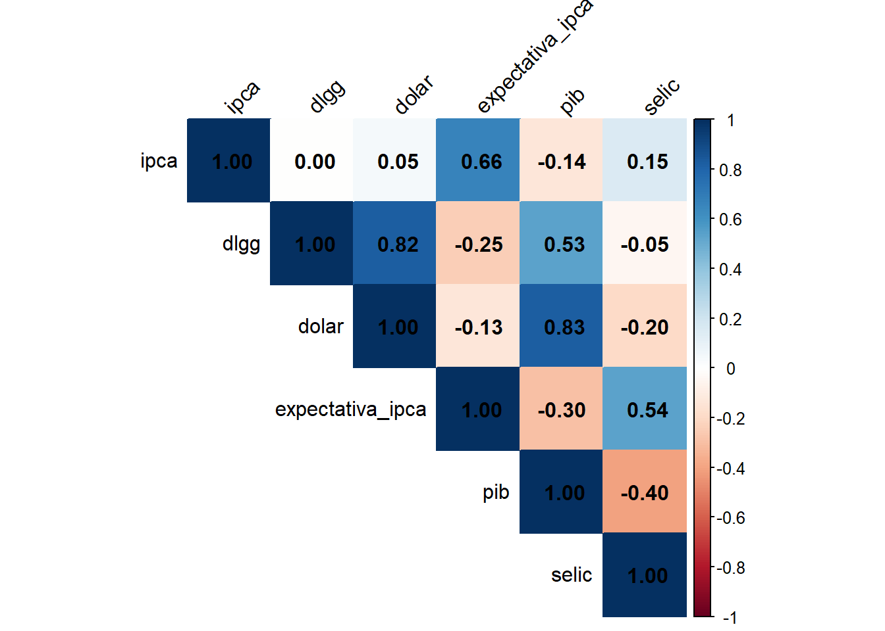
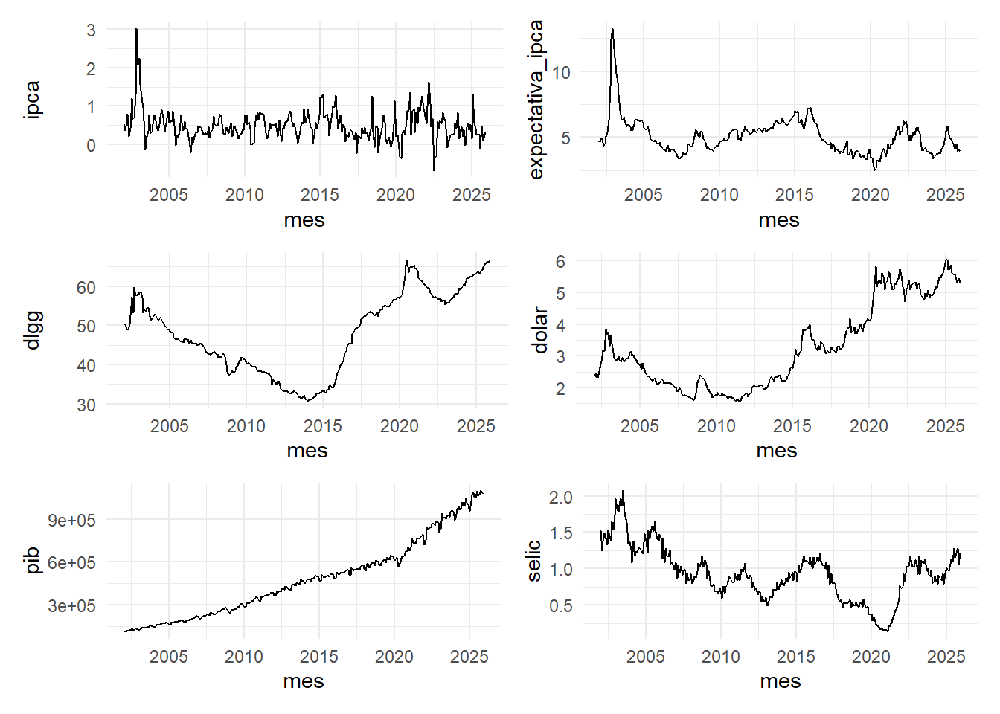
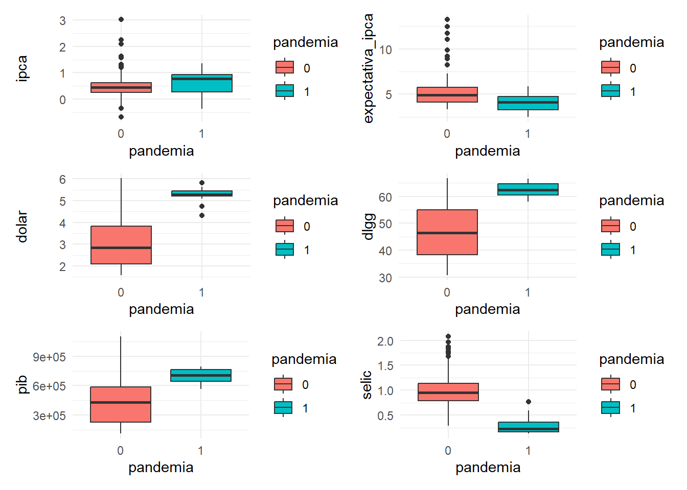
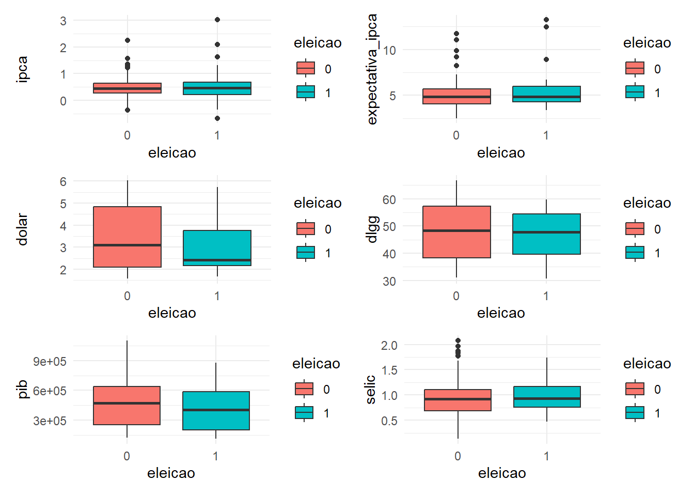
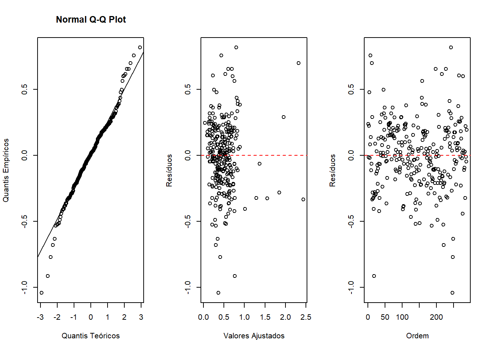
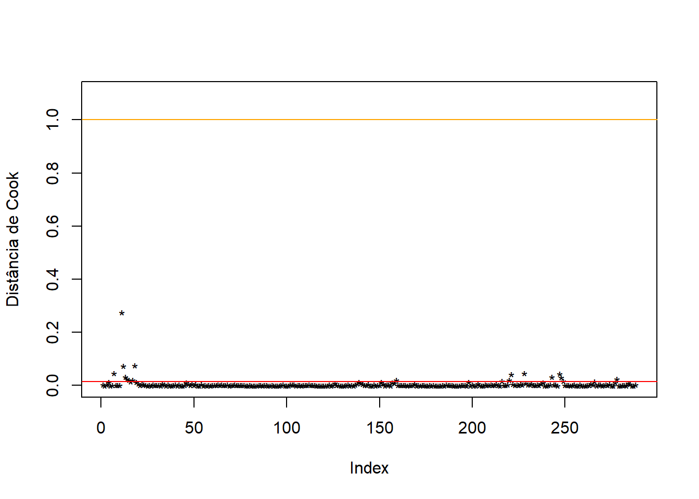

Relatório de análise do IPCA a partir de outras variáveis econômicas
Author
Emanuel Simões e Pedro Noleto
Introdução
Neste trabalho iremos através de diversos bancos de dados, analisar 288 observações referente a cada mês de 2002 a 2025. Referentes aos dados que mais afetam a variável resposta o IPCA (Índice nacional de preços ao consumidor). Para chegar as variáveis respostas, pensamos em diversas variáveis como o IGP (Índice geral de preços), IPA (Índice de preço no atacado), IPC (Índice de preço ao consumidor) e INCC (Índice nacional de custo da construção), por fim estes índices não foram utilizados por que medem a inflação por meio de outros parâmetros que poderiam afetar e atrapalhar a análise. Para que a manipulação dos dados fossem o mais natural o possível focamos em variáveis explicativas tanto quantitativas quanto qualitativas. Sendo as variáveis quantitativas aquelas que podem ser observadas por todo o período de tempo, referente ao total de observações, portanto de 2002 a 2025. Já as variáveis qualitativas são eventos que aconteceram e acontecem em momentos específicos, neste caso as eleições e a pandemia. Para determinar se o evento e quantitativo ou qualitativo, optamos por utilizar 1 para o período que ocorre determinados eventos e 0 para períodos que não ocorrem.
Introdução aos dados
Esta seção apresenta uma breve explicação, o período e a fonte de cada variável utilizada para as análises.
Variável resposta:
IPCA (Índice Nacional de Preços ao Consumidor Amplo): mede a inflação oficial do Brasil a partir da variação de preços ao consumidor. Os dados são a variação percentual mensal do IPCA, de janeiro de 1980 a dezembro de 2025. Dados coletados de sidra.ibge.gov.br/pesquisa/snipc/ipca/tabelas.
Expectativa média de Inflação: taxa acumulada para os próximos doze meses do dia observado. Os dados são de janeiro de 2002 a dezembro de 2025, registrados mensalmente. Dados coletados de ipeadata.gov.br/Default.aspx.
PIB (Produto Interno Bruto): soma os bens e serviços produzidos pelo país. Os dados são de janeiro de 2000 a dezembro de 2025, registrados mensalmente. Dados coletados de ipeadata.gov.br/ExibeSerie.aspx?serid=521274780&module=M.
SELIC (Sistema Especial de Liquidação e de Custódia): taxa básica de juros brasileira. Os dados são de janeiro de 2000 a dezembro de 2025, registrados mensalmente. Dados coletados de aasp.org.br/produtos-servicos/indices-economicos/mensal/.
Variáveis explicativas (qualitativas):
Eleição: 1 se é ano de eleição (2002, 2006, 2010, 2014, 2018, 2022), 0 se não é ano de eleição. Os dados são de janeiro de 2000 a dezembro de 2025, registrados mensalmente.
Pandemia: 1 se a data é durante a pandemia (março de 2020 a dezembro de 2021), 0 se não é durante a pandemia. Os dados são de janeiro de 2000 a dezembro de 2025, registrados mensalmente.
O conjunto de dados possui 8 variáveis com 288 observações: de janeiro de 2002 a dezembro de 2025 (24 * 12 = 288). Observa-se que não há dados ausentes, o que é ótimo, pois não será necessário fazer uma imputação, que poderia distorcer a análise.
OBS: Variáveis como taxa de desemprego, dívida bruta do governo geral, commodities, exportações, importações e consumo não foram utilizadas devido à dificuldade de encontrar banco de dados com observações suficientes ou na frequência mensal. Já as outras taxas de inflação (IGP, IPA, IPC e INCC) não foram utilizadas porque medem a inflação a partir de outros focos, o que pode atrapalhar a análise.
A variação do IPCA média é de 0,49, com desvio padrão de 0,39, o que implica numa altíssima dispersão (CV = 0,80). Outra observação é que o intervalo entre p75 e p100 é bem maior do que o intervalo dos outros quartis, logo há uma forte assimetria à direita, o que indica presença de outliers.
A variação do DLGG possui média de 48,02, desvio padrão de 10,29 e possui média dispersão (CV = 0,21). Observa-se que os patamares do histograma possuem quase o mesmo tamanho, o que sugere uma distribuição uniforme.
O preço do dólar possui média 3,26 e desvio padrão 1,33, com CV = 0,41, o que indica alta dispersão.
A expectativa do IPCA possui média 5,08, desvio padrão 1,38 e CV = 0,27, o que indica média dispersão. Diante do histograma de do intervalo entre p75 e p100 em comparação com o intervalo entre os outros quartis, percebe-se que há uma forte assimetria à direita, assim como a variação do IPCA.
O PIB mensal possui média de 480891,12 e desvio padrão de 271400,35, com alta dispersão, visto que CV = 0,56. Observa-se que há semelhança no histograma da variável dolar e PIB, o que indica possível correlação.
A taxa selic possui média 0,93, desvio padrão de 0,37 e CV = 0,40, o que indica alta dispersão. Percebe-se que o histograma apresenta um formato quase simétrico.
No geral, as variáveis possuem média ou alta dispersão, com muitas delas com forte assimetria à direita, o que pode significar que há dados relativamente próximos a mediana, porém também com muitos casos pontuais em que há grandes variações devido ao contexto geopolítico.
Correlação

Destaca-se a correlação entre as variáveis:
ipca e expectativa_ipca (66%);
dlgg com dolar (82%) e pib (53%);
dolar e pib (83%);
expectativa_ipca e selic (54%).
Como todas são variáveis econômicas, já era esperado que houvesse algumas correlações, porém, as mais fortes são a do preço do dólar com a dívida líquida do governo geral e com o PIB. O que indica uma certa dependência do Brasil da moeda americana.
Evolução temporal

Observa-se que há algumas semelhanças históricas entre as varíaveis ipca, expectativa_ipca e selic. As variáveis dlgg e dolar também parecem ter semelhanças históricas.
Efeitos da pandemia

Durante a pandemia, a variação do IPCA teve uma dispersão maior do que nos anos sem pandemia. Já a espectativa do IPCA teve uma variação equivalente, porém com uma mediana menor.
O preço do dólar foi maior durante a pandemia, mas não detectou-se casualidade, dado que durante o período de janeiro de 2020 a dezembro de 2021, intervalo de 2 anos, o dólar já é mais alto do que os 18 anos anteriores. O mesmo vale para a DLGG e PIB.
A tendência central da SELIC durante a pandemia é inferior. Possivelmente a redução da SELIC foi uma estratégia para estimular a atividade econômica do país (juros baixos estimula a compra parcelada).
Efeitos dos anos de eleição

A variação do IPCA é minimamente maior em anos de eleição. Já a média e mediana parecem não mudar.
O preço do dólar possui menor dispersão e uma mediana menor em anos de eleição, mas não há evidências de que haja casualidade.
Não foi detectado efeitos da eleição nas outras variáveis.
Modelo proposto
mod_completo <-lm(ipca ~ ., dados[, -1])
summary(mod_completo)
Call:
lm(formula = ipca ~ ., data = dados[, -1])
Residuals:
Min 1Q Median 3Q Max
-1.02072 -0.15518 0.01025 0.17555 0.83695
Coefficients:
Estimate Std. Error t value Pr(>|t|)
(Intercept) -8.604e-01 1.490e-01 -5.777 2.02e-08 ***
dlgg 1.215e-02 3.598e-03 3.376 0.000838 ***
dolar -1.795e-02 4.544e-02 -0.395 0.693176
expectativa_ipca 2.576e-01 1.625e-02 15.850 < 2e-16 ***
pib -2.103e-07 1.583e-07 -1.328 0.185119
selic -4.068e-01 7.166e-02 -5.676 3.44e-08 ***
eleicao1 -2.125e-02 3.715e-02 -0.572 0.567707
pandemia1 2.416e-02 9.211e-02 0.262 0.793256
---
Signif. codes: 0 '***' 0.001 '**' 0.01 '*' 0.05 '.' 0.1 ' ' 1
Residual standard error: 0.2657 on 280 degrees of freedom
Multiple R-squared: 0.5566, Adjusted R-squared: 0.5455
F-statistic: 50.21 on 7 and 280 DF, p-value: < 2.2e-16
Algumas variáveis não contribuem significativamente para explicar o IPCA, logo, será feito uma seleção de variáveis para tentar melhorar o modelo.
A variável dolar, além de não ser significativa, é multicolinear, dado que seu VIF > 10. Opta-se então por removê-la do modelo.
dados_modelo <- dados %>%select(-dolar)mod <-lm(ipca ~ ., dados_modelo[, -1])
Agora, será feito uma seleção de variáveis para tornar o modelo mais parcimonioso, ou seja, ter o mínimo de variáveis que expliquem bem o comportamento da variável resposta. Será utilizado o método de stepwise.
Manteve-se as variáveis explicativas dlgg, expectativa_ipca, pib e selic, logo, serão removidas as variáveis pandemia e eleição por não contribuirem significativamente na explicação da variável resposta.
Com \(X_1\) = dlgg, \(X_2\) = expectativa_ipca, \(X_3\) = pib e \(X_4\) = selic e \(R^2 = 0,56\) e \(R_{adj}^2 = 0,55\).
Análise do ajuste do modelo
Será feito uma análise de resíduos e análise de pontos influentes para verificar se o modelo realmente descreve bem os dados e visualizar possíveis distorções.
residuos <-residuals(mod)
shapiro.test(residuos)$p.value
[1] 0.0016734
Ao aplicar o teste de Shapiro Wilks, obteve-se ou p-valor < 0,05, logo, há evidências de que os resíduos são normais.

Diante do gráfico Q-Q Plot, verifica-se que os resíduos são aproximadamente normais, dado que os valores que estão sobre a reta, porém as caudas são mais pesadas, visto que na esquerda os pontos estão abaixo da reta e na direita estão acima da reta.
No gráfico que compara Resíduos e Valores Ajustados, os dados estão espalhados em torno do zero sem um padrão, logo a variância é constante.
O gráfico que compara Ordem e Resíduos mostra que os dados são indepedentes, visto que não há um padrão no comportamento das amostras.
Há evidências de que as pressuposições do modelo estão satisfeitas.
Outliers

Não há valores acima do critério conservador, logo considera-se que não há valores discrepantes.
Conclusão
Podemos concluir após a análise, a manipulação e o ajuste do modelo de regressão dos dados que eventos de caráter qualitativo não afetam de maneira significativa os modelos. Primeiramente por ocorrer por um período muito curto, e segundo por ter a variação de outros índices que alteram seus valores. Já as variáveis quantitativas em sua maioria explicam de maneira mais precisa os valores do IPCA. Tendo obtido o R² podemos disser que 55% da variação da variável resposta pode ser explicada pelo nosso modelo, o que é um resultado satisfatório.